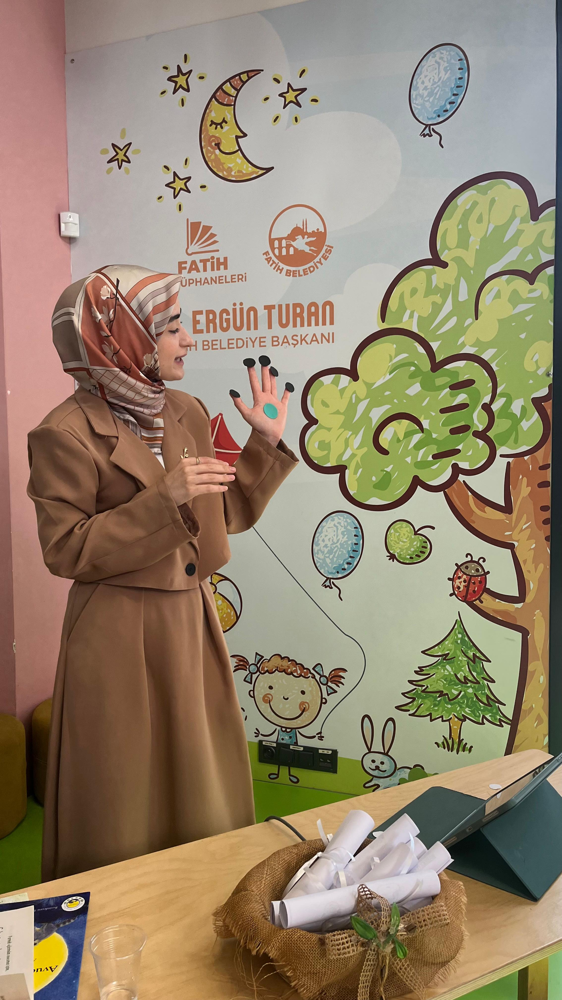
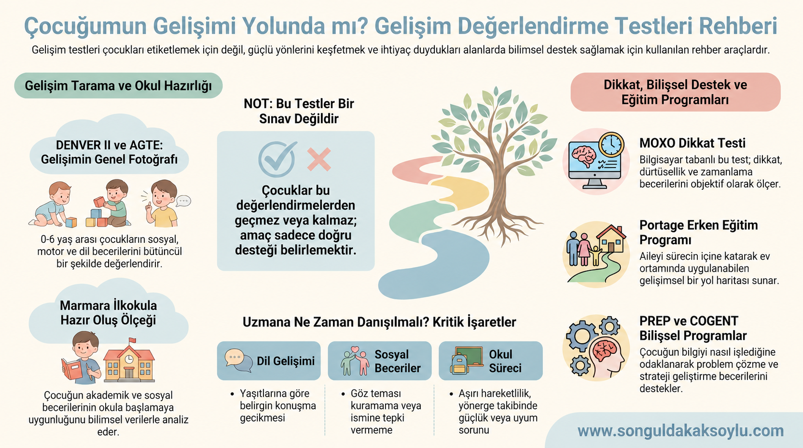
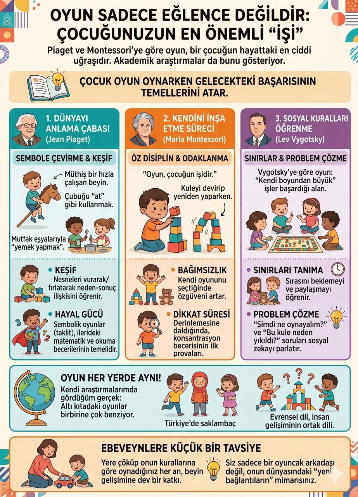

Çocuk Gelişimi Uzmanı & Aile Danışmanı
Her çocuğun gelişim yolculuğu kendine özgüdür.
Çocuğunuzu bütüncül bir bakışla anlamak, güçlü yönlerini görünür kılmak ve ailenize günlük yaşamda karşılığı olan bir yol haritası sunmak için bilimsel değerlendirme ile güvenli danışmanlığı bir araya getiriyorum.

Uzmanınızla tanışın
Çocuğu anlamak, aileyi sürecin güçlü bir parçası yapmakla başlar.
Ben Songül Dakak Soylu. Çocuk gelişimi alanındaki akademik birikimimi ve uygulama deneyimimi; her çocuğun bireysel ritmine, aile yapısına ve günlük yaşamına duyarlı bir çalışma anlayışıyla bir araya getiriyorum.
Amacım bir çocuğu yalnızca zorlandığı alanlarla tanımlamak değil; güçlü yönlerini, gelişimsel ihtiyaçlarını ve çevresiyle kurduğu ilişkiyi birlikte değerlendirerek aile için anlaşılır ve uygulanabilir bir çerçeve oluşturmaktır.
Çalışma alanlarım
İhtiyacı doğru anlamaya odaklanan uzmanlık alanları
Her süreç; çocuğun yaşı, gelişimsel özellikleri, aile gözlemleri ve başvuru nedeni dikkate alınarak planlanır.
Gelişimsel Değerlendirme
Dil, motor, bilişsel, sosyal-duygusal ve öz bakım alanlarını bütüncül biçimde anlamaya yardımcı olan değerlendirme süreci.
İnceleyin →MOXO Dikkat Testi
Dikkat, zamanlama, dürtüsellik ve hiperaktivite performansına ilişkin objektif veriler sunan bilgisayar tabanlı uygulama.
İnceleyin →Okula Hazır Oluş
Çocuğun ilkokula geçişte ihtiyaç duyduğu dikkat, dil, motor ve sosyal-duygusal ön becerileri değerlendiren süreç.
İnceleyin →COGENT / PREP
Dikkat, planlama, bilgi işleme, okuma ve öğrenme stratejilerini desteklemeye yönelik yapılandırılmış programlar.
İnceleyin →Ebeveyn Danışmanlığı
Rutinler, sınırlar, duygu düzenleme ve davranışsal güçlükler için aile yaşamına uyarlanabilir rehberlik.
İnceleyin →Aile Danışmanlığı
Aile içi iletişimi, rol paylaşımını ve ilişkisel süreçleri güvenli bir çerçevede ele alan danışmanlık.
İnceleyin →Süreç nasıl ilerler?
Belirsizliği, birlikte oluşturduğumuz anlaşılır bir yol haritasına dönüştürüyoruz.
Değerlendirme ve danışmanlık süreçleri, hazır kalıplar yerine çocuğun ve ailenin gerçek ihtiyaçlarına göre yapılandırılır.
- 01
İhtiyacı dinleme
Başvuru nedeni, gelişimsel öykü ve aile gözlemleri güvenli bir görüşme ortamında ele alınır.
- 02
Bütüncül değerlendirme
Gözlem, görüşme ve uygun bilimsel araçlardan elde edilen bilgiler birlikte yorumlanır.
- 03
Geri bildirim ve planlama
Güçlü yönler, destek alanları ve günlük yaşama uyarlanabilecek öneriler aileyle paylaşılır.
- 04
İzlem ve destek
İhtiyaca göre müdahale, danışmanlık veya yönlendirme süreci planlanır ve gözden geçirilir.
Aileler için kaynaklar
Bilimsel bilgiyi günlük yaşama yaklaştıran yazılar

Çocuğumun gelişimi yolunda mı? Değerlendirme testlerinin gücü
Değerlendirme araçlarının neyi ölçtüğünü, nasıl yorumlandığını ve ailelere nasıl yol gösterebildiğini keşfedin.
Çocuk gelişiminde rutinlerin önemi
Güven, öz düzenleme ve günlük yaşam becerilerini destekleyen uygulanabilir adımlar.

Oyun sadece eğlence değildir
Oyunun bilişsel, sosyal-duygusal, dil ve motor gelişimdeki yerine yakından bakın.
İlk adım
Aklınızdaki soruyu birlikte netleştirebiliriz.
Çocuğunuzun yaşı, gözlemlediğiniz durum ve merak ettiğiniz hizmetle ilgili kısa bir mesaj bırakın. Size uygun süreci birlikte değerlendirelim.